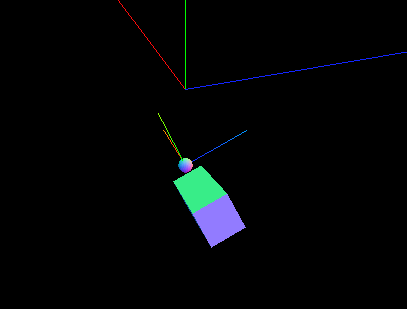

I was driving myself batty trying to get all my rotations and transformations to behave correctly in three.js. So in these kind of cases one must always pare down to essentials. As follows:
Lets create a simple mesh and place it on the scene:
// Example 1
var geo = new THREE.BoxGeometry(5,5,20,32);
_mesh = new THREE.Mesh(geo, new THREE.MeshNormalMaterial());
Then in the render loop, we rotate it around the Z axis (the blue axis):
_mesh.rotation.z = -_tick * Math.PI/256;
The result:
This just a screen grab, an animated gif. Hence the jerk when the animation restarts.
Now what happens if we rotate the mesh in the initial setup:
// Example 2
var geo = new THREE.BoxGeometry(5,5,20,32);
_mesh = new THREE.Mesh(geo, new THREE.MeshNormalMaterial());
_mesh.rotateY(Math.PI/2);
Code in the render loop is the same as before:
_mesh.rotation.z = -_tick * Math.PI/256;
Now the block rotates along the X (red) axis, even though we told it to rotate it along the Z axis.
If we specify rotation order in the initial setup, then it will rotate around the Z axis:
// Example 3
_mesh.rotation.order = 'ZXY';
The result:
Now lets try some translation. Initial setup:
// Example 4
var geo = new THREE.BoxGeometry(5,5,20,32);
_mesh = new THREE.Mesh(geo, new THREE.MeshNormalMaterial());
_mesh.rotation.order = 'ZXY';
_mesh.rotateY(Math.PI/2);
_mesh.position.set(0,-6,0);
_scene.add( _mesh);
Render loop is the same, rotate around Z axis. The result is that the translation is applied and the object rotates around the its new local axis which was also shifted downwards:
Three.js also supports the axis/angle method of specifying rotations:
// Example 5
var geo = new THREE.BoxGeometry(5,5,20,32);
_mesh = new THREE.Mesh(geo, new THREE.MeshNormalMaterial());
// these have no effect because in render() we will directly modify the internal rotation matrix
//_mesh.rotateY(Math.PI/4);
//_mesh.rotation.order = 'ZXY';
Render loop:
var axis = new THREE.Vector3( 0, 0, 1 );
var angle = _tick * Math.PI / 256;
// matrix is a THREE.Matrix4()
_matrix.makeRotationAxis( axis.normalize(), angle );
_mesh.rotation.setFromRotationMatrix( _matrix );
The result is identical to what we achieved above in Example 1 with mesh.rotation. But often it is easier to conceptualize an axis of rotation rather than a succession of Euler angles.
We can mimic the Example 3 result using makeRotationY and applying it to the geometry.
// Example 6
var geo = new THREE.BoxGeometry(5,5,20,32);
geo.applyMatrix( new THREE.Matrix4().makeRotationY( Math.PI/2 ) );
_mesh = new THREE.Mesh(geo, new THREE.MeshNormalMaterial());
_scene.add( _mesh);
Render loop is same as Example 5, with the desired result.
Now why did that work whereas mesh.rotationY is ignored? Because we rotated the geometry; the vertices were changed. This will be clearer if we translate the geometry:
// Example 7
var geo = new THREE.BoxGeometry(5,5,20,32);
geo.applyMatrix( new THREE.Matrix4().makeRotationY( Math.PI/2 ) );
geo.applyMatrix( new THREE.Matrix4().makeTranslation(0,-6,0) );
_mesh = new THREE.Mesh(geo, new THREE.MeshNormalMaterial());
_scene.add( _mesh);
// put sphere at mesh origin
var sphere = new THREE.Mesh(
new THREE.SphereGeometry(1,20,20),
new THREE.MeshNormalMaterial());
sphere.position.set(0, 0, 0,); // we could put the sphere anywhere
// and the box would rotate around it
Render loop code is the same as the previous 2 examples:
var axis = new THREE.Vector3( 0, 0, 1 );
var angle = -_tick * Math.PI / 256;
// matrix is a THREE.Matrix4()
_matrix.makeRotationAxis( axis.normalize(), angle );
_mesh.rotation.setFromRotationMatrix( _matrix );
The result:
The sphere represents the center of our geometry, its origin. The vertices have been rotated and translated from the local origin, where the sphere is.
If we’re rotating geometries, it is helpful to create a set of axes to show the local rotation axes of the geometry.
// Example 8:
// put axes at mesh origin with mesh rotation
// drawAxes is my routine which is based on THREE.AxisUtils(). See animation link below.
_scene.add(drawAxes(10, _mesh.position, _mesh.rotation));
Since we’re just rotating the mesh around the Z (blue) axis, we can use this more compact syntax in the render loop:
_mesh.rotation.z = -_tick * Math.PI/128;
The result:

So to review: we wanted a geometry to rotate around a point that was external to the geometry. We did that by transforming the vertices of the geometry using applyMatrix.
There is another way to accomplish the same result: attach the box mesh to a parent mesh. Set the child’s position (that is to say, the box’s position) to be relative to the parent. And then place the parent where one wants, and rotate the parent if appropriate:
// Example 9:
var geo = new THREE.BoxGeometry(5,5,20,32);
_mesh = new THREE.Mesh(geo, new THREE.MeshNormalMaterial());
_mesh.rotation.y = -Math.PI/2;
_mesh.position.set(0,-6,0); // _mesh will be the child
_sphere = new THREE.Mesh( // _sphere will be the parent
new THREE.SphereGeometry(1,20,20),
new THREE.MeshNormalMaterial());
_sphere.position.set(0,-12,0);
_sphere.rotation.x -= Math.PI/8;
_sphere.add(_mesh); // add child to parent
_scene.add(_sphere);
// put axes at parent origin with parent rotation
_scene.add(drawAxes(10, _sphere.position, _sphere.rotation));
And in the render loop, rotate the _sphere, not the _mesh.
When is this method (building a parent child relationship) preferable to changing the geometry? I couldn’t see much difference until I had to work with physi.js to apply physics to some of my meshes. Physi.js only works with meshes that have certain simple geometries (sphere, cone, box, etc). It will however work with compound meshes and thus with more complicated geometries, but in this case a parent/child relationship between the meshes is required.
Full three.js animation is here.
Using r69 of three.js.
 Drawing Pentatope Cross-Sections in three.js
Drawing Pentatope Cross-Sections in three.js